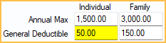

Insurance Remaining Calculations
Open Dental uses the following logic to calculate insurance remaining estimates.
In the Treatment Plan Module, at the lower right, is the Insurance Remaining grid.

Alternatively, in the Account Module hover over Ins Rem.
Calculations consider the Estimates as of date. By default, this is the current day, so benefits used and pending for the current benefit year are considered.
Primary/Secondary
Primary: Calculations for the first (primary) insurance plan listed in the Family Module (order of 1).
Secondary: Calculations for the secondary insurance plan listed in the Family Module (order of 2).
If a patient has additional (e.g. tertiary) or medical insurance, these are not displayed in the insurance remaining. Open Dental will still consider insurance benefits used for these plans when calculating procedure estimates.
Procedure estimates are found on the Procedure - Financial Tab.
Family Insurance
Annual Max: The family's annual maximum. Usually this value is entered in the Family column, Annual Max field on the Benefits Window.

Other Benefits matching the following criteria are considered:
- Category: None or General
- Proc Code: None (blank)
- Type: Limitation
- Time Period: CalendarYear or ServiceYear
- Quantity: 0
- Qualifier: None
- Coverage Level: Family
- Treatment Area: Default
Fam Ded: The family's general deductible. Usually this value is entered in the Family column, General Deductible field on the Edit Benefits window - Simplified View.

When entered as an Other Benefit, it corresponds to the benefit that matches the following criteria:
- Category: None or General
- Proc Code: None (blank)
- Type: Deductible
- Time Period: CalendarYear or ServiceYear
- Quantity: 0
- Qualifier: None
- Coverage Level: Family
- Treatment Area: Default
Individual Insurance
Annual Max: The patient's annual maximum. Usually this value is entered in the Individual column, Annual Max field on the Edit Benefits window - Simplified View.

Other benefits matching the following criteria will also be considered:
- Category: None or General
- Proc Code: None (blank)
- Type: Limitation
- Time Period: CalendarYear or ServiceYear
- Quantity: 0
- Qualifier: None
- Coverage Level: Individual
- Treatment Area: Default
Deductible: The patient's general deductible. Usually this value is entered in the Individual column, General Deductible field on the Edit Benefits window - Simplified View.

Other benefits matching the following criteria will also be considered:
- Category: None or General
- Proc Code: None (blank)
- Type: Deductible
- Time Period: CalendarYear or ServiceYear
- Quantity: 0
- Qualifier: None
- Coverage Level: Individual
- Treatment Area: Default
Ded Remai: The remaining deductible (family or individual) for the current benefit year.
The lowest of the two amounts shows. Only claim procedures with status of Adjustment, NotReceived, Received, and Supplemental are considered. Each calculation is shown below.
Fam Ded - (all deductibles applied to any family member) = family Ded Remain
Deductible - (all deductibles applied to the current patient) = individual Ded Remain
Ins Used: The patient's total insurance used for the current benefit year.
Only Claim Procedures with status of Adjustment, NotReceived, Received, and Supplemental are considered. Adjustments to Insurance Benefits are also considered.
Pending: The patient's total amount of pending insurance.
Only claim procedures with status NotReceived are considered.
Remain: The patient's remaining insurance amount.
The calculation is:
Individual Annual Max - (Ins Used + Pending) = Remaining
Troubleshooting
The annual max I have entered for an insurance plan is not displaying.
There are a few reasons the annual max may not be displaying.
- If the Annual Max was entered as an Other Benefit it may not have been entered correctly. Ensure the benefit entered matches the correct criteria for Family or Individual (see above). Alternatively, enter the Annual Max into the fixed row in the Benefits, Simplified View instead.
- If no benefit matches the criteria for Annual Max, the box is blank. If multiple benefits meet the criteria (e.g., annual maximums for specific categories), the lowest amount shows. To prevent the annual max from being lower than it should be, annual maximum for specific procedures or categories should be attached to the appropriate procedure code or category.
A procedure is not counting toward the Ins Used or Pending.
A separate annual max or lifetime max may exist for the procedure's Insurance Category or the individual procedure.If a benefit meets the following criteria, it does not count towards Ins Used or Pending:
- Category: Any category other than General OR None with a Proc Code
- Proc Code: If category is None, any procedure code
- Type: Limitation
- Time Period: CalendarYear, ServiceYear, or Lifetime
- Quantity: 0
- Qualifier: None
- Coverage Level: Family or Individual
- Treatment Area: Default
Example: If a patient's insurance has an ortho lifetime max, benefits paid toward ortho treatment do not count towards Ins Used or Pending calculations.
Alternatively, verify a claim has been created for the procedure. Only procedures with a status of Received are considered for Ins Used and only procedures with a status of NotRecieved are considered for Pending.
The deductible I have entered is not displaying in the Insurance Remaining grid.
There are a few reasons the annual max may not be displaying.
- If the deductible was entered as an Other Benefit it may not have been entered correctly. Ensure the benefit entered matches the correct criteria for Family or Individual (see above). Alternatively, enter the deductible into the fixed row in the Benefits, Simplified View instead.
- If no benefit matches the criteria for Deductible, the box is blank. If multiple benefits meet the criteria (e.g., general deductibles for specific categories), the deductible entered first shows. To prevent the incorrect general deductible from being calculated, deductibles for specific categories or procedures should be attached to the specific category or procedure code.
The patient has paid all or part of their deductible, but it is not being counted toward Ded Remai in the Insurance Remaining grid.
The deductible amount paid must be entered into a claim or, if paid outside of your office, as an Adjustment to Insurance Benefits, otherwise it will not be calculated.
Insurance remaining calculations are not calculating as expected after editing Insurance Categories.
Insurance Categories are set up based on typical groupings and generally do not need to be edited. If the E-Benefit Category assigned to an Insurance Category is changed, this can affect insurance estimates and Insurance Remaining calculations. The General E-Benefits Category is used to calculate Annual Max. This is normally the General insurance category (D0000-D7999 and D9000-D9999), but if the E-Benefits Category has been reassigned to a different insurance category, insurance remaining calculations may not function as expected.
Insurance Remaining Calculations are incorrect after adding back an insurance plan that was dropped.
If an insurance plan is dropped and a duplicate insurance plan is added back, Ins Used and Pending appear to show incorrect amounts if the dropped plan was associated with any paid or pending claims in the current benefit period. This is because claims associated with the dropped plan are not used in the calculations. To adjust the amounts, follow these steps.
- For the new plan, add Adjustments to Insurance Benefits on the Edit Insurance Plan window. Enter the total insurance that has been paid to date, and the total deductible that has been used.
- In the Account Module, review all sent claims and collect data for any claims attached to the dropped plan that are still outstanding.
- Delete outstanding claims attached to the dropped plan.
- Recreate the claims for the new plan.